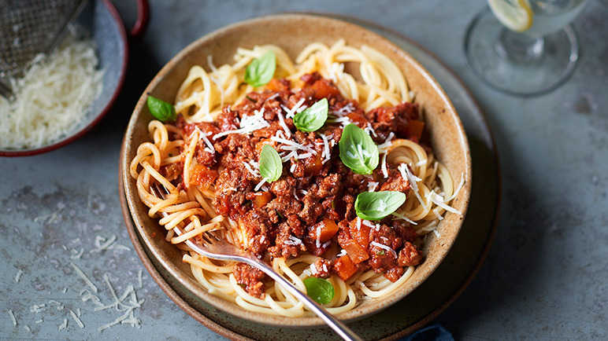

Spaghetti Bolognese Recipe

Description
LSpaghetti bolognese consists of spaghetti (long strings of pasta)
with an Italian ragù (meat sauce) made with minced beef, bacon and tomatoes,
served with Parmesan cheese. Spaghetti bolognese is one of the most popular
pasta dishes eaten outside of Italy.
ingredients
-
1 tbsp olive oil
-
1 onion, finely chopped
-
1 stick celery, diced
-
80g smoked cubetti di pancetta
-
1 large clove garlic, crushed
-
1 sprig rosemary, leaves only, roughly chopped
-
500g 5% fat lean beef mince
-
50g chicken livers, defrosted and finely chopped
-
1 whole nutmeg, to grate
-
150ml red wine
-
2 x 390g cartons chopped tomatoes
-
350g spaghetti
-
25g parmesan shavings
-
1 handful fresh basil leaves, to serve
Cooking Steps
-
Add the olive oil and onion to a large saucepan and cook over a medium heat
for 2-3 minutes, until the onion begins to soften. Add the carrot and celery
and cook for 4-5 minutes, then add the pancetta. Season and stir well, cooking
for 2 minutes until the pancetta becomes crispy. Add the garlic and rosemary,
cooking for another 1 minute.
-
Break in the mince using a wooden spoon and brown all over for about 3-4 minutes.
Add the chicken livers and stir well to combine, then add a pinch of the grated
nutmeg.
-
Pour in the wine and allow to reduce for 1 minute, before pouring in the chopped
tomatoes. Bring to the boil, cover and simmer gently for 60-75 minutes,
topping up with more liquid if needed. Remove the lid for the last 15 minutes
so the sauce thickens.
-
Meanwhile, cook the spaghetti according to the instructions on the packet. Drain
and divide between four plates. Spoon over the bolognese and serve sprinkled with
parmesan and fresh basil leaves.